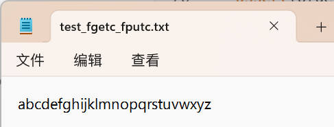
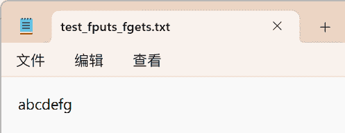
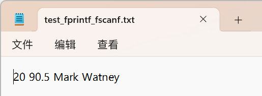
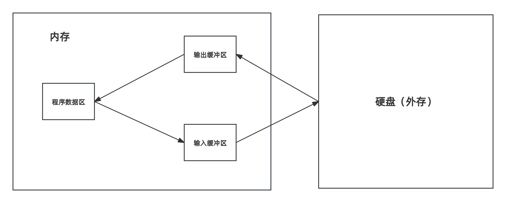

C语言文件操作
C语言中的流与文件指针
C语言中的流
在C语言中，流表示任意输入的源或任意输出的目的地
计算机中的读写操作与输入输出操作的关系
在计算机中，读/写操作是相对于计算机而言，而输入/输出操作是相对于人而言
读操作：从键盘/文件中输入数据到输入流中，由计算机从输入流中进行读取
写操作：由计算机向输出流中写入数据，再通过输出流向屏幕/文件中输出数据
Tip
简单理解：
对于读操作（相对于计算机而言）：用户从键盘/文件中输入数据至流中，CPU需要处理数据首先得有数据，所以计算机需要从流中读取数据
对于写操作（相对于计算机而言）：计算机当前已经知道需要输出的数据在自己身上以及数据位置，但是人不知道，所以计算要输出数据需要先进行写操作，将数据写入输出流，再输出到屏幕/文件中
文件指针
在C语言中，对流的访问是通过文件指针实现的。该指针类型为FILE*类型，定义在头文件stdio.h
用文件指针表示的特定的流具有标准的名字，如果需要还可以声明其他的一些文件指针
| //两个文件指针类型的指针变量
FILE* fp1;
FILE* fp2;
可以使fp1与fp2指向两个文件的文件信息区（文件信息区是⼀个结构体变量）。通过该文件信息区中的信息就能够访问该文件。也就是说，通过文件指针变量能够间接找到与它关联的⽂件
|
Note
尽管操作系统会限制可以同时打开的流的数量，但是程序可以通过声明任意数量的FILE*类型的变量

C语言中的标准流
C语言中的标准流
在C语言头文件stdio.h中，提供了3个默认流，这三个流的类型是FILE*，并且这3个流可以直接使用，不需要对其进行声明，也不用打开或关闭它们
| 文件指针 |
流 |
默认含义 |
stdin |
标准输入 |
键盘 |
sdtout |
标准输出 |
屏幕 |
stderr |
标准错误 |
屏幕 |
文件类型
程序文件
文件的内容不一定是程序，而是程序运行时读写的数据，例如程序运行需要从中读取数据的文件
程序文件在C语言中包括源程序文件（Windows平台下后缀为.c），目标文件（Windows平台下后缀为.obj）,可执行程序文件（Windows平台下后缀为.exe）
数据文件
数据文件表示文件的内容不一定是程序，而是程序运行时读写的数据，例如程序运行时需要从中读取数据的文件，或者输出内容的文件
在C语言头文件stdio.h中支持两种数据文件，一种是文本文件，另一种是二进制文件。在文本文件中，字节表示字符，使得用户可以检查或编辑文件，而在二进制文件中，字节不一定表示字符
文本文件
所谓文本文件，即在内存中以二进制形式存储，再以ASCII字符的形式存储到外存的文件
文本文件具有两种特性：
- 文本文件分为若干行。文本文件的每一行通常以一两个特殊字符结尾，在Windows系统中，行末标记是回车符
\x0d与一个紧跟其后的回行符\x0a
- 文本文件可以包含一个特殊的“文件末尾”标记，在Windows中，标记为
\x1a（Ctrl+Z）Ctrl+Z不是必需的，但如果存在，他就标志着文件的结束，其后的所有字节都会被忽略
二进制文件
所谓二进制文件，即数据在内存中以二进制的形式存储，不加转换输出到外存的文件
二进制没有文本文件的两种特性，即二进制文件不会分行，也没有行末标记和文件结尾标记，所有字节都是平等对待
Note
在无法确定文件是文本形式还是二进制形式时，安全的做法是把文件假定为二进制文件
Note
字符不论是文本文件还是二进制文件一律以ASCII形式存储于外存，数值型数据根据需要选择其中一种存储于外存
例如，在外存中存储数值10000

文件的打开和关闭
文件在读写之前应该先打开文件，在使用结束之后应该关闭文件
在编写程序的时候，在打开文件的同时，都会返回⼀个FILE*的指针变量指向该文件，也相当于建立了指针和文件的关系。
ANSIC规定使用 fopen 函数来打开文件， fclose 来关闭文件
文件的打开fopen与关闭fclose
| //文件打开
函数原型
FILE * fopen ( const char * filename, const char * mode );
参数说明
第一个参数是char*类型的指针，该指针指向文件的文件名，通过该文件名找到文件（如果系统支持路径则可以带上文件路径）
第二个参数是char*类型的指针，该指针指向文件的打开模式
返回类型
函数返回类型是FILE*类型的指针，该指针指向文件内容的开头，如果文件打开失败，则返回NULL，故需要对该指针进行非空检查
//文件关闭
函数原型
int fclose ( FILE * stream );
参数说明
参数为FILE*类型的指针，该指针指向即将关闭的文件流
返回类型
函数返回类型是int类型，如果文件成功关闭，则返回0，否则返回EOF
|
Note
在Windows中，用.来表示文件当前路径，用..来表示文件当前路径的上一路径，例如，当前路径下的test.txt文件，表示为./test.txt，当前路径下的上一路径的test.txt文件，表示为./../test.txt。指定具体路径例如：C:\data\test.txt（注意\防止与紧随其后的字母形成转义，写成\\）
文件打开模式
| 文件使用方式 |
含义 |
如果指定文件不存在 |
| "r"（只读） |
为了输入数据，打卡一个已经存在的文本文件 |
出错 |
| "w"（只写） |
为了输出数据，打开一个文本文件（如果指定的文件中有内容，会清空文件的内容） |
建立一个新的文件 |
| "a"（追加） |
向文本文件尾添加数据 |
建立一个新的文件 |
| "rb"（只读） |
为了输入数据，打开一个二进制文件 |
出错 |
| "wb"（只写） |
为了输出数据，打开一个二进制文件 |
建立一个新文件 |
| "ab" （追加） |
向一个二进制文件尾添加数据 |
建立一个新文件 |
| "r+"（读写） |
为了读和写，打开一个文本文件 |
出错 |
| "w+"（读写） |
为了读和写，建立一个新文件 |
建立一个新文件 |
| "a+"（读写） |
打开一个文件，在文件尾进行读写 |
建立一个新的文件 |
| "rb+"（读写） |
为了读和写，打开一个二进制文件 |
出错 |
| "wb+"（读写） |
为了读和写，建立一个新的二进制文件 |
建立一个新的文件 |
| "ab+"（读写） |
打开一个二进制文件，在文件尾进行读和写 |
建立一个新文件 |
代码实例：
| #include <stdio.h>
int main ()
{
FILE * pFile;
//打开文件
pFile = fopen ("myfile.txt","w");//默认情况下，代码路径与文件路径相同
//若打开失败会fopen函数会返回空指针，所以需要对指针进行判断，防止野指针
//⽂件操作
if (pFile!=NULL)
{
fputs ("fopen example",pFile);
//关闭文件
fclose (pFile);
pf = NULL;//需要手动对指针置为空，防止野指针
}
return 0;
}
|
文件的顺序读写
顺序读写：文件指针依次向后移动进行内容读写操作
顺序读写函数
| 函数名 |
功能 |
适用于 |
fgetc |
字符输入函数（读字符函数） |
所有输入流 |
fputc |
字符输出函数（写字符函数） |
所有输出流 |
fgets |
文本行输入函数（读文本函数） |
所有输入流 |
fputs |
文本行输出函数（写文本函数） |
所有输出流 |
fscanf |
格式化输入函数（格式化读操作函数） |
所有输入流 |
fprintf |
格式化输出函数（格式化写操作函数） |
所有输出流 |
fread |
二进制输入函数（二进制读操作函数） |
文件 |
fwrite |
二进制输出函数（二进制写操作函数） |
文件 |
Note
所有输入流一般指适用于标准输入流和其他输入流（如文件输入流）
所有输出流一般指适用于标准输出流和其他输出流（如文件输出流）
函数fgetc和fputc
| fgetc
函数原型
int fgetc ( FILE * stream );
参数说明
参数表示FILE*类型的文件指针，该指针指向特定的输入流
返回类型
函数返回int类型的值，该值代表成功读取到的字符，根据ASCII码转换为对应的值
fputc
函数原型
int fputc ( int character, FILE * stream );
参数说明
函数第一个参数为int类型的变量，该变量代表需要输出的字符
函数第二个参数为FILE*类型的文件指针，该指针指向特定的输出流
返回类型
函数返回int类型的值，该值代表成功输出的字符，根据ASCII码转换为对应的值
|
Note
fgetc与fputc函数针对字符输入和输出，并且fputc函数在输出时不会自动换行
代码实例（文件输入流与文件输出流）
| #define _CRT_SECURE_NO_WARNINGS 1
#include <stdio.h>
#include <assert.h>
int main()
{
//fputc
//打开文件
//文件输出流
FILE* pfputc = fopen("test_fgetc_fputc.txt", "w");
//若文件打开失败会返回空指针，故需要进行判断
assert(pfputc);
//向文件中写入26个英文字母
for (int i = 0; i < 26; i++)
{
fputc('a' + i, pfputc);
}
//关闭文件
fclose(pfputc);
pfputc = NULL;//fclose不会将指针置为空，为避免野指针，需要手动将文件指针置为空
//fgetc
//文件输入流
//打开文件
FILE* pfgetc = fopen("test_fgetc_fputc.txt", "r");
assert(pfgetc);
int ch = 0;
//从文件中读取26个英文字母
//fgetc函数正常读到文件结尾会返回EOF
while ((ch = fgetc(pfgetc)) != EOF)
{
printf("%c ", ch);
}
//关闭文件
fclose(pfgetc);
pfgetc = NULL;
return 0;
}
输出结果：
a b c d e f g h i j k l m n o p q r s t u v w x y z
|
文件结果：

代码实例（标准输入流与标准输出流）
| #define _CRT_SECURE_NO_WARNINGS 1
#include <stdio.h>
int main()
{
//标准输入流
//fgetc从标准输入中读取字符，返回该字符的ASCII码
//fputc将对应字符输出到控制台
for (int i = 0; i < 3; i++)
{
fputc(fgetc(stdin), stdout);//fputc不会自动换行
}
return 0;
}
输入：
abc
输出结果：
abc
|
函数fgets和fputs
| fgets
函数原型
char * fgets ( char * str, int num, FILE * stream );
参数说明
第一个参数为char*类型的指针，该指针指向流数据的目标位置（即将流中的数据读取到的目标位置）
第二个参数为int类型的变量，改变量代表需要读取的字符个数，该个数为num-1个，因为函数会为\0预留位置
第三个参数为FILE*类型的文件指针，该指针指向特定的输入流
返回类型
函数返回char*类型的指针，该指针指向目标位置的起始地址
fputs
函数原型
int fputs ( const char * str, FILE * stream );
参数说明
第一个参数为char*类型的指针，该指针指向需要写入流中的字符串的起始地址
第二个参数为FILE*类型的文件指针，该指针指向特定的输出流
返回类型
函数返回int类型的值，该值表示函数是否成功写入，成功写入返回非负值，否则返回EOF
|
Note
函数fgets和fputs针对字符串的输入和输出，并且fputs不会自动换行
代码实例（文件输入和输出流）
| #define _CRT_SECURE_NO_WARNINGS 1
#include <stdio.h>
#include <assert.h>
int main()
{
char* str = "abcdefg";
//fputs
//文件输出流
FILE* pfputs = fopen("test_fputs_fgets.txt", "w");
assert(pfputs);
fputs(str, pfputs);
//关闭文件
fclose(pfputs);
pfputs = NULL;
//fgets
//文件输入流
char arr[10] = { 0 };
FILE* pfgets = fopen("test_fputs_fgets.txt", "r");
assert(pfgets);
fgets(arr, 5, pfgets);//读入4个字符，并为最后的\0留下一个位置，总共5个字符
fclose(pfgets);
pfgets = NULL;
printf("%s\n", arr);
return 0;
}
输出结果：
abcd
|
文件结果：

代码实例（标准输入和输出流）
| #define _CRT_SECURE_NO_WARNINGS 1
#include <stdio.h>
int main()
{
//标准输入流
char arr[10] = { 0 };
fgets(arr, 10, stdin);
fputs(arr, stdout);
return 0;
}
输入：
abcdefghijklmn
输出结果：
abcdefghi
|
Note
因为fgets函数可以限制读取的字符个数，故在输入字符串至数组中，可以在一定程度上确保不会出现数组越界，而scanf不可以，故可以用fgets函数代替scanf输入字符串
函数fscanf与fprintf
| fscanf
函数原型
int fscanf ( FILE * stream, const char * format, ... );
参数说明
第一个参数为FILE*类型的文件指针，该指针指向特定的输入流
第二个参数为可变参数列表
返回类型
函数返回int类型的值，该值表示成功读取到数据的占位符的个数
fprintf
函数原型
int fprintf ( FILE * stream, const char * format, ... );
参数说明
第一个参数为FILE*类型的文件指针，该指针指向特定的输出流
第二个参数为可变参数列表
返回类型
函数返回int类型的值，该值表示成功输出的字符个数
|
代码实例（文件输入和输出流）
| #define _CRT_SECURE_NO_WARNINGS 1
#include <stdio.h>
#include <assert.h>
#include <stdlib.h>
struct test
{
int age;
char name[20];
double score;
};
int main()
{
//fprintf
//文件输出流
FILE* pfprintf = fopen("test_fprintf_fscanf.txt", "w");
if (pfprintf == NULL)
{
perror("pfprintf");
return EXIT_FAILURE;//相当于return 1，对应的return 0有return EXIT_SUCCESS
}
struct test p = {20, "Mark Watney", 90.5};
fprintf(pfprintf, "%d %.1f %s", p.age, p.score, p.name);
//关闭文件
fclose(pfprintf);
pfprintf = NULL;
//fscanf
//文件输入流
FILE* pfscanf = fopen("test_fprintf_fscanf.txt", "r");
if (pfscanf == NULL)
{
perror("pfscanf");
return EXIT_FAILURE;
}
struct test p1 = {0};
fscanf(pfscanf, "%d %lf %s", &(p1.age), &(p1.score), p1.name);
//关闭文件
fclose(pfscanf);
pfscanf = NULL;
printf("%d %.1f %s", p1.age, p1.score, p1.name);
return 0;
}
输出结果：
20 90.5 Mark
|
文件结果：

代码实例（标准输入和输出流）
| #define _CRT_SECURE_NO_WARNINGS 1
#include <stdio.h>
int main()
{
//标准输入和输出流
int age = 0;
char c = 0;
double d = 0.0;
fscanf(stdin, "%d %c %lf", &age, &c, &d);
fprintf(stdout, "%d %c %.1f", age, c, d);
return 0;
}
输入：
20 a 90.5
输出结果：
20 a 90.5
|
函数fread与fwrite
| fread
函数原型
size_t fread ( void * ptr, size_t size, size_t count, FILE * stream );
参数说明
第一个参数为void*类型的指针，该指针指向读取的数据需要存储到的目标地址
第二个参数为size_t类型的变量，该变量表示数据类型在内存中占用的大小
第三个参数为size_t类型的变量，该变量表示需要读取的数据的个数
第四个参数为FILE*类型的文件指针，该指针指向文件输入流
返回类型
函数返回size_t类型的值，该值表示成功读到的数据个数
fwrite
函数原型
size_t fwrite ( const void * ptr, size_t size, size_t count, FILE * stream );
参数说明
第一个参数为void*类型的指针，该指针指向需要写入目标文件流的数据的地址
第二个参数为size_t类型的变量，该变量表示数据类型在内存中占用的大小
第三个参数为size_t类型的变量，该变量表示需要读取的数据的个数
第四个参数为FILE*类型的文件指针， 该指针指向文件输出流
返回类型
函数返回size_t类型的值，该值表示成功写入的数据个数
|
代码实例（文件输入和输出流）
Note
函数fread和fwrite只能用于文件的输入和输出流，不可以用于其他输入和输出流
| #define _CRT_SECURE_NO_WARNINGS 1
#include <stdio.h>
#include <assert.h>
#include <stdlib.h>
struct test
{
int age;
char name[20];
double score;
};
int main()
{
//fwrite
//文件输出流
struct test p = { .age = 20, .name = "Peter Parker", .score = 90.5 };
FILE* pfwrite = fopen("test_fwrite_fread.txt", "wb");
assert(pfwrite);
fwrite(&p, sizeof(p), 1, pfwrite);
fclose(pfwrite);
pfwrite = NULL;
//fread
//文件输入流
struct test p1 = { 0 };
FILE* pfread = fopen("test_fwrite_fread.txt", "rb");
assert(pfread);
fread(&p1, sizeof(p1), 1, pfread);
fclose(pfread);
pfread = NULL;
printf("%d %.1f %s", p1.age, p1.score, p1.name);
return 0;
}
输出结果：
20 90.5 Peter Parker
|
文件结果：
函数printf/scanf、fprintf/fscanf和sprintf/sscanf对比
| 函数名 |
功能 |
使用于 |
printf |
格式化输出函数 |
标准输出流 |
scanf |
格式化输入函数 |
标准输入流 |
fprintf |
格式化输出函数 |
所有输出流 |
fscanf |
格式化输入函数 |
所有输入流 |
sprintf |
将格式化数据转化成字符串 |
存在可格式化数据 |
sscanf |
将字符串转化成格式化数据，遇到空格停止读取 |
字符串中存在可格式化数据 |
| sscanf
函数原型
int sscanf ( const char * s, const char * format, ...);
参数说明
第一个参数为char*类型的指针，该指针指向待转化为格式化数据的字符串的地址
第二个参数为可变参数列表
返回类型
函数返回int类型的值，该值表示成功读取到数据的占位符的个数
sprintf
函数原型
int sprintf ( char * str, const char * format, ... );
参数说明
第一个参数为char*类型的指针，该指针指向将格式化数据转换成功后的字符串的起始地址
第二个参数为可变参数列表
返回类型
函数返回int类型的值，该值表示成功打印的字符个数
|
代码实例
| #define _CRT_SECURE_NO_WARNINGS 1
#include <stdio.h>
#include <assert.h>
#include <stdlib.h>
enum
{
SIZE = 5
};
struct test
{
int age;
char name[20];
double score;
};
int main()
{
//ssprintf
struct test p = { .age = 20, .name = "Sherlock Holmes", .score = 90.5 };
char arr[50] = { 0 };
sprintf(arr, "%d %s %.1f", p.age, p.name, p.score);
printf("%s\n", arr);
//sscanf
struct test p1 = { 0 };
char* s = "30 John 95.5";
sscanf(s, "%d %s %lf", &(p1.age), p1.name, &(p1.score));//sscanf的占位符顺序需要与字符串中的数据类型顺序相同，并且sscanf读到空格时表示当前占位符已经读完，读下一个数据填充占位符直到填满占位符
//sscanf(s, "%s %d %lf", p1.name, &(p1.age), &(p1.score));//读不到数据
//char* s = "30 John Watson 95.5"
//sscanf(s, "%d %s %lf", &(p1.age), p1.name, &(p1.score))//读到John时，填充%s，接着将会将读Watson，但是Watson不属于%f可识别的内容，故%f读取不到内容，当前缓冲区还有Watson和95.5
printf("%d %.1f %s\n", p1.age, p1.score, p1.name);
return 0;
}
输出结果：
20 Sherlock Holmes 90.5
30 95.5 John
|
文件随机读写
随机读写：按照用户需求，指定文件指针的位置，以该位置为标准进行读写
函数fseek
函数作用：根据文件指针的位置和偏移量来定位文件指针
| 函数原型
int fseek ( FILE * stream, long int offset, int origin );
参数说明
第一个参数为FILE*类型的文件指针，该指针指向文件输入和输出流
第二个参数为long int类型的变量，该变量表示偏移量，即指针移动到指定位置需要的值
第三个参数为int类型的变量，该变量表示开始计算偏移量的文件指针起始位置，包括SEEK_CUR（文件指针当前位置）、SEEK_SET（文件起始位置）、SEEK_END（文件末尾位置）
返回类型
函数返回int类型的值，当函数成功回到指定位置函数返回0，否则返回非0值
|
代码实例
| #define _CRT_SECURE_NO_WARNINGS 1
#include <stdio.h>
#include <assert.h>
int main()
{
//fseek
FILE* p = fopen("test_fseek.txt", "w");
assert(p);
for (int i = 0; i < 26; i++)
{
fputc('a' + i, p);
}
fclose(p);
p = NULL;
FILE* pfseek = fopen("test_fseek.txt", "r");
//当前光标在第一个字符前
char ch = fgetc(pfseek);
printf("%c ", ch);//打印a
//当前光标在第二个字符前
ch = fgetc(pfseek);
printf("%c ", ch);//打印b
//当前光标在第三个字符前
ch = fgetc(pfseek);
printf("%c ", ch);//打印c
//当前光标在第四个字符前
ch = fgetc(pfseek);
printf("%c ", ch);//打印d
//使光标从当前位置到文件起始位置
fseek(pfseek, -4, SEEK_CUR);//从SEEK_CUR开始计算偏移量，当前光标在d位置，在当前位置前面有4个字符，传入-4值
ch = fgetc(pfseek);
printf("%c ", ch);//打印a
//使光标从起始位置到文件中某一位置
fseek(pfseek, 8, SEEK_SET);//从SEEK_SET开始计算偏移量，当前光标在起始位置，在当前位置向后跳过8个字符，打印第9个字符，传入8
ch = fgetc(pfseek);
printf("%c ", ch);//打印h
fclose(pfseek);
pfseek = NULL;
return 0;
}
输出结果：
a b c d a i
|
函数ftell
函数作用：返回文件指针相对于起始位置的偏移量
| 函数原型
long int ftell ( FILE * stream );
参数说明
函数参数为FILE*类型的文件指针，该指针指向文件的输入和输出流
返回类型
函数返回long int类型的值，该值表示文件指针相对于起始位置的偏移量，错误时返回-1L
|
代码实例
| #define _CRT_SECURE_NO_WARNINGS 1
#include <stdio.h>
#include <assert.h>
#include <stdlib.h>
struct test
{
int age;
char name[20];
double score;
};
int main()
{
//fseek
FILE* p = fopen("test_fseek.txt", "w");
assert(p);
for (int i = 0; i < 26; i++)
{
fputc('a' + i, p);
}
fclose(p);
p = NULL;
FILE* pfseek = fopen("test_fseek.txt", "r");
//当前光标在第一个字符前
char ch = fgetc(pfseek);
printf("%c ", ch);//打印a
//当前光标在第二个字符前
ch = fgetc(pfseek);
printf("%c ", ch);//打印b
//当前光标在第三个字符前
ch = fgetc(pfseek);
printf("%c ", ch);//打印c
//当前光标在第四个字符前
ch = fgetc(pfseek);
printf("%c ", ch);//打印d
//使光标从当前位置到文件起始位置
//fseek(pfseek, -4, SEEK_CUR);//从SEEK_CUR开始计算偏移量，当前光标在d位置，在当前位置前面有4个字符，传入-4值
//ch = fgetc(pfseek);
//printf("%c ", ch);//打印a
//使用ftell函数确定偏移量
fseek(pfseek, -ftell(pfseek), SEEK_CUR);
ch = fgetc(pfseek);
printf("%c ", ch);
fclose(pfseek);
pfseek = NULL;
return 0;
}
输出结果：
a b c d a
|
函数rewind
函数作用：让文件指针回到文件的起始位置
| #define _CRT_SECURE_NO_WARNINGS 1
#include <stdio.h>
#include <assert.h>
#include <stdlib.h>
struct test
{
int age;
char name[20];
double score;
};
int main()
{
//fseek
FILE* p = fopen("test_fseek.txt", "w");
assert(p);
for (int i = 0; i < 26; i++)
{
fputc('a' + i, p);
}
fclose(p);
p = NULL;
FILE* pfseek = fopen("test_fseek.txt", "r");
//当前光标在第一个字符前
char ch = fgetc(pfseek);
printf("%c ", ch);//打印a
//当前光标在第二个字符前
ch = fgetc(pfseek);
printf("%c ", ch);//打印b
//当前光标在第三个字符前
ch = fgetc(pfseek);
printf("%c ", ch);//打印c
//当前光标在第四个字符前
ch = fgetc(pfseek);
printf("%c ", ch);//打印d
//使光标从当前位置到文件起始位置
//fseek(pfseek, -4, SEEK_CUR);//从SEEK_CUR开始计算偏移量，当前光标在d位置，在当前位置前面有4个字符，传入-4值
//ch = fgetc(pfseek);
//printf("%c ", ch);//打印a
//使用ftell函数确定偏移量
//fseek(pfseek, -ftell(pfseek), SEEK_CUR);
//ch = fgetc(pfseek);
//printf("%c ", ch);
//使用rewind函数使光标从当前位置回到文件起始位置
rewind(pfseek);
ch = fgetc(pfseek);
printf("%c ", ch);
fclose(pfseek);
pfseek = NULL;
return 0;
}
输出结果：
a b c d a
|
文件读取结束后的原因判定
函数feof
函数作用：当文件读取结束的时候（已知文件读取结束），判断是读取结束的原因是否是：遇到文件末尾结束
Note
在文件读取过程中，不能用feof函数的返回值直接来判断文件的是否结束
函数ferror
函数作用：当文件读取结束的时候（已知文件读取结束），用于检测在读取或写入文件时是否发生错误。如果在进行文件操作时发生错误，ferror函数会返回非零值
文本文件中的错误判定
文本文件读取是否结束，判断返回值是否为 EOF ，或者 NULL
例如：
fgetc 判断是否为 EOFfgets 判断返回值是否为 NULL
代码实例
| #define _CRT_SECURE_NO_WARNINGS 1
#include <stdio.h>
int main()
{
int c = 0;
FILE* fp = fopen("test_feof_text.txt", "r");
if (!fp) {
perror("File opening failed");
return EXIT_FAILURE;
}
//fgetc 当读取失败的时候或者遇到文件结束的时候，都会返回EOF
while ((c = fgetc(fp)) != EOF)
{
putchar(c);
}
//判断是什么原因结束的
if (ferror(fp))
puts("I/O error when reading");
else if (feof(fp))
puts("End of file reached successfully");
fclose(fp);
fp = NULL;
return 0;
}
输出结果：
End of file reached successfully
|
二进制文件的错误判定
函数作用：二进制文件的读取结束判断，判断返回值是否小于预期中要读的个数
例如：
fread判断返回值是否小于预期中要读的个数
代码实例
| #define _CRT_SECURE_NO_WARNINGS 1
#include <stdio.h>
#include <assert.h>
#include <stdlib.h>
enum
{
SIZE = 5
};
struct test
{
int age;
char name[20];
double score;
};
int main()
{
double a[SIZE] = { 1.,2.,3.,4.,5. };
FILE* fp = fopen("test.bin", "wb");
fwrite(a, sizeof * a, SIZE, fp);
fclose(fp);
double b[SIZE];
fp = fopen("test.bin", "rb");
size_t ret_code = fread(b, sizeof * b, SIZE, fp);
if (ret_code == SIZE)
{
puts("Array read successfully, contents: ");
for (int n = 0; n < SIZE; ++n)
{
printf("%.1f ", b[n]);
}
putchar('\n');
}
else
{
if (feof(fp))
printf("Error reading test.bin: unexpected end of file\n");
else if (ferror(fp))
{
perror("Error reading test.bin");
}
}
fclose(fp);
fp = NULL;
return 0;
}
输出结果：
Array read successfully, contents:
1.0 2.0 3.0 4.0 5.0
|
文件缓冲区
ANSIC标准采用“缓冲文件系统”处理的数据文件的，所谓缓冲文件系统是指系统自动地在内存中为
程序中每⼀个正在使用的文件开辟一块“文件缓冲区”。从内存向磁盘输出数据会先送到内存中的缓
冲区，装满缓冲区后才⼀起送到磁盘上。如果从磁盘向计算机读入数据，则从磁盘文件中读取数据输
入到内存缓冲区（充满缓冲区），然后再从缓冲区逐个地将数据送到程序数据区（程序变量等）。缓
冲区的大小根据C编译系统决定

代码演示
| #include <stdio.h>
#include <windows.h>
//VS2022 Win11环境测试
int main()
{
FILE*pf = fopen("test.txt", "w");
fputs("abcdef", pf);//先将代码放在输出缓冲区
printf("睡眠10秒-已经写数据了，打开test.txt⽂件，发现⽂件没有内容\n");
Sleep(10000);
printf("刷新缓冲区\n");
fflush(pf);//刷新缓冲区时，才将输出缓冲区的数据写到⽂件（磁盘）
printf("再睡眠10秒-此时，再次打开test.txt⽂件，⽂件有内容了\n");
Sleep(10000);
fclose(pf);
//注：fclose在关闭⽂件的时候，也会刷新缓冲区
pf = NULL;
return 0;
}
输出结果：
睡眠10秒-已经写数据了，打开test_fflush.txt文件，发现文件没有内容
刷新缓冲区
再睡眠10秒-此时，再次打开test_fflush.txt文件，文件有内容了
|
刷新缓冲区之前：
刷新缓冲区之后：

Tip
因为有缓冲区的存在，C语言在操作文件的时候，需要做刷新缓冲区或者在文件操作结束的时候使用fclose函数关闭文件来对缓冲区进行刷新
{kind=link}
{kind=link}
{kind=link}
{kind=link}
{kind=link}
{kind=link}
{kind=link}